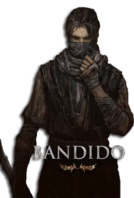
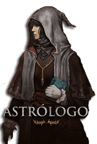
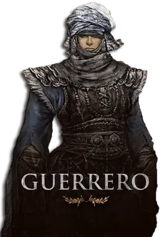
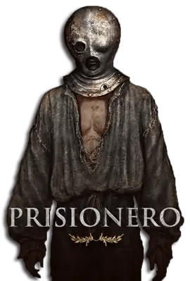
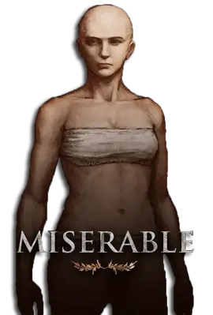
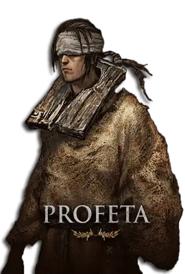

Elden rinG
Elden Ring es un videojuego que promete ser una experiencia inmersiva y emocionante, llevando a los jugadores a un viaje a través de un mundo lleno de misterio y peligro.
La combinación del talento de Hidetaka Miyazaki y George R. R. Martin crea una expectativa sin precedentes en la comunidad de jugadores y aficionados a la fantasía.
Elden Ring está destinado a dejar una marca indeleble en la industria del videojuego y en la imaginación de quienes se aventuren en sus vastas tierras.
Elden Ring ofrece una jugabilidad desafiante y gratificante. Los jugadores tendrán que dominar un sistema de combate complejo y utilizar estratégicamente una variedad de armas y habilidades mágicas para superar los numerosos enemigos y jefes que pueblan el mundo.
Carracteristicas Principales
Universo de fantasía
En Elden Ring, los jugadores se sumergen totalmente en un nuevo mundo conocido como las Tierras Intermedias. Aquí, tendrán la oportunidad de descubrir los secretos del poderoso Anillo de Elden, enfrentarse a enemigos con historias profundas, interactuar con imagenes/personajes con motivaciones únicas que pueden ayudar u obstaculizar su avance, y enfrentarse a criaturas terroríficas.

La exploración de las Tierras Intermedias
Elden Ring ofrece paisajes impresionantes y mazmorras intrincadas y sombrías que se entrelazan de manera fluida. Los jugadores pueden explorar este vasto mundo a pie o a caballo, solos o en línea con otros jugadores, sumergiéndose por completo en praderas cubiertas de hierba, pantanos asfixiantes, montañas escarpadas, castillos imponentes y otros lugares majestuosos, todo en una escala sin precedentes en un juego de FromSoftware.

Dificultad
Elden Ring se encuentra dentro del subgénero "Souls-like" , reconocido por su alto nivel de dificultad, narrativa sutil, desarrollo del personaje y combate estratégico. Este tipo de juegos, que comenzaron con la serie Dark Souls de FromSoftware, ofrecen una experiencia desafiante e intensa en la que los jugadores deben aprender de sus errores y adaptarse para avanzar.

El Alma de los Souls-like
Este juego pertenece al género “Souls-like”, y aquí es donde la verdadera prueba aguarda a los valientes. ¿Qué significa ser un Souls-like?
Dificultad
En Elden Ring la muerte,es una compañera constante. Los jugadores deben enfrentar desafíos implacables, y cada derrota es una lección. La dificultad es parte integral de la experiencia, y aquellos que no alcancen los puntos de guardado perderán su progreso.
Narrativa ambiental
La trama se teje en los detalles. A través de fragmentos de historia en los entornos, descripciones de objetos y diálogos crípticos, los jugadores descubren la historia de Las Tierras Intermedias. La narrativa es como un rompecabezas, y solo los curiosos la reconstruirán por completo.

Mejora de personaje
Los Semidioses no están indefensos. A medida que avanzan, pueden mejorar sus habilidades y atributos. Pero cuidado: la moneda de la mejora es frágil y se pierde con cada muerte.

Combate Metodico
Cada golpe, cada esquiva, requiere precisión. El combate es un ballet mortal, y la estrategia es clave. ¿Atacar o esperar? ¿Arriesgar o protegerse? La elección es tuya.

Historia
En las vastas Tierras Intermedias, bajo el gobierno de la Reina Márika, conocida como la Eterna, el Círculo de Elden, origen del Árbol Áureo,ha sido aniquilado. Los descendientes de Márika, todos ellos semidioses, han tomado posesión de los fragmentos del Círculo de Elden, denominados Grandes Runas. Sin embargo, la codicia y la corrupción desenfrenada que acompañó a la búsqueda de esta renovada fuente de poder provocó un conflicto devastador conocido como la Devastación. Este conflicto marcó el abandono de la Voluntad Mayor, y ahora la esperanza recae en aquellos despreciados por su falta de gracia y exiliados de las Tierras Intermedias: los Sinluz.
La narradora, con gracia en sus manos esbeltas, inicia su relato. “Sucedió en tiempos ancestrales. Pero al evocarlo, lo veo como una verdad innegable”. Así da inicio al relato del Desmoronamiento, una guerra devastadora entre los descendientes de Marika, quienes poseen un estatus semidivino en las Tierras Intermedias. En una noche sombría, durante el crudo invierno, una horda de asesinos desconocidos se deslizó sigilosamente a través de las Tierras Intermedias.
Este oscuro pacto se llevó consigo las vidas de muchos parientes de la Reina-Diosa, esparcidos por todo el imperio y demasiado numerosos para que su divina protección pudiera salvarlos. Entre todas las pérdidas, ninguna fue tan devastadora para la Reina Eterna como la de Godwyn el Dorado. Con su muerte, el Anillo de Elden fue misteriosamente despedazado, y junto con él se desmoronó el orden del mundo.

Del caos surgido de esta tragedia emergió la guerra, una guerra abierta y amarga que enfrentó a sangre contra sangre y pariente contra pariente. Esta contienda despedazó un vasto e próspero imperio en frágiles fragmentos. Ningún bando pudo obtener el apoyo necesario para asegurar una victoria decisiva, incluso cuando estaban impulsados por el poder de una Gran Runa.
La batalla entre el General Radahn y Malenia la Cortada ilustró claramente que ni la fuerza ni la habilidad por sí solas serían suficientes para controlar todas las tierras que Marika había unido. Y así, las Tierras Intermedias ya no se encontraban dominadas por la guerra abierta, sino atrapadas en un incómodo estancamiento que parecía insoluble. "A menos que, por supuesto", sugiere la narradora con una sonrisa pícara, "¿decidas tomar la corona?"
Clases
Las clases en Elden Ring sirven como arquetipos iniciales que están disponibles para los jugadores. Todas las clases en Elden Ring siguen un concepto similar al visto en la saga Dark Souls, de forma que una clase determina el Equipamiento y Estadísticas iniciales, que más tarde podrán ser mejoradas a medida que se progresa en el juego.
Durante la fase de creación del personaje, los jugadores podrán elegir un Recuerdo que proporcionan más opciones de personalización en las fases tempranas del juego:
-
Heroe

El Héroe comienza con mucha Fuerza y Vigor y un poco de Arcano. Parte del nivel 7 y está equipado con un hacha de batalla y un escudo de piel.
-

Bandido
El Bandido comienza con mucho Arcano y Destreza. Parte del nivel 5 y está equipado con una daga, una rodela para desvíos, arco corto y flechas.
-

Astrologo
El Astrólogo comienza con mucha Sabiduría, Mente y un poco de Destreza. Parte del nivel 6 y está equipado con un báculo y una espada y escudo pequeños.
-

Guerrero
El Guerrero comienza con mucha Destreza y una media del resto de estadísticas físicas. Parte del nivel 8 y está equipado con dos cimitarras y un escudo ligero.
-

Prisionero
El Prisionero comienza con mucha Sabiduría y Destreza y una media en el resto de estadísticas físicas. Parte del nivel 9 y está equipado con un estoque, un báculo y un escudo.
-
Confesor

El Confesor comienza con muchaFe y una media del resto de estadísticas físicas. Parte del nivel 10 y está equipado con una espada ancha, un escudo de lágrima y un sello.
-

Miserable
El Miserable parte del nivel 1 con 10 en todas las estadísticas y tan solo una porra como arma. Es la clase más débil con la que comenzar en Elden Ring, y solo deberían elegirla los jugadores más experimentados que quieran enfrentarse a un reto en las fases tempranas del juego
-
Vagante

El Vagante comienza con mucha Fuerza, Vigor y Destreza. Parte del nivel 9 y está equipado con una espada, un escudo y una alabarda.
-

Profeta
El Profeta comienza con mucha Fe y Mente y algo de Fuerza y Arcano.
-
Samurai

El Samurái comienza con mucha Destreza y una media equilibrada en Fuerza, Aguante y Mente. Parte del nivel 9 y está equipado con una katana, un arco largo y flechas (¡incluidas flechas de fuego!)
Los Sin luz de las Tierras Intermedias
La Orden Dorada está rota. A lo largo y ancho de las Tierras Intermedias,semidioses poseedores de fragmentos del Círculo de Elden se enfrentan y combaten entre las ruinas de un reino otrora perfecto, hoy abandonado por las enseñanzas doradas de la Voluntad Mayor.
Mientras los ecos de la contienda retumban a lo lejos, una figura proscrita se acerca. Antaño, sus antepasados llamaron a las Tierras Intermedias su hogar, pero la bendita luz de la gracia se perdió para su pueblo y fueron expulsados del reino. Son los Sinluz, y han vuelto para reclamar el título de Elden prometido por la leyenda.
Este es el mundo de ELDEN RING. Conviértete en Sinluz y explora las Tierras Intermedias. Cabalgarás por vastas praderas, galoparás por suaves colinas y ascenderás hasta la cima de rocosos peñascos a lomos de tu efímero corcel para descubrir un mundo rebosante de vida y peligros.
En los vastos campos donde comienza tu periplo, criaturas míticas merodean en los páramos,horrores inimaginables acechan en las ciénagas y marismas y todo tipo de soldados y guerreros itinerantes esperan dar caza a los desprevenidos. Tímidas criaturas mordisquean la dulce hierba o se escabullen entre la maleza.
Los pocos habitantes que no han enloquecido o se han vuelto hostiles tratan de sobrevivir cerca de las ciudades en ruinas destruidas por la Devastación. Si los ayudas, puede que te ofrezcan las respuestas que buscas. Por encima de todos ellos, asentados en tierras usurpadas en las que trampas, secretos y guardianes abundan, los semidioses señores corrompidos,otros miembros de una noble familia real— regentan sus dominios con el implacable poder otorgado por los fragmentos del Círculo de Elden.


Los sin luz no vienen solos
Mientras desafías a tus enemigos y exploras este vasto mundo, siempre te acompañará esta grandiosa banda sonora
Mas juegos de from software
-
Adéntrate en las oscuras calles de Yharnam, una ciudad gótica asolada por una misteriosa enfermedad. Eres un cazador, y tu misión es desentrañar los secretos ocultos en la noche. Combina armas de fuego y armas blancas para enfrentarte a criaturas grotescas y descubrir la verdad detrás de la pesadilla
-

En el mundo de Lordran, la muerte es inevitable, pero la perseverancia es tu mejor aliada. Explora un reino en ruinas, lucha contra monstruos épicos y descubre la historia detrás de los anillos de fuego. Cada paso es una prueba, y cada victoria es una recompensa.
-


Sumérgete en el Japón feudal como un shinobi con un brazo prostético y habilidades sobrenaturales. La precisión en el combate es crucial mientras te enfrentas a samuráis, bestias y espíritus vengativos. La historia de honor y venganza te atrapará desde el principio
-

Sumérgete en un mundo de robots gigantes, personalización y combates intensos. Pilotarás un Armored Core, un mecha que puedes adaptar y afinar con piezas únicas. Los mapas dinámicos y los controles fluidos te llevarán a enfrentamientos épicos.
-

En un internado aislado, eres un espíritu invisible que puede alterar el tiempo y el espacio. Explora los recuerdos de los niños y desentraña los misterios que rodean a esta escuela. La belleza melancólica y la conexión emocional te envolverán
Parcitipa por una edicion Colleccionista
Completa la siguiente información para tener la oportunidad de ganar una edición coleccionista del juego, que incluye una estatua exclusiva y otros premios increíbles